RingLibUI Extension¶
In this chapter we will learn about using the RingLibUI extension.
This extension provides complete support for Libui
Using this extension we can develop and distribute lightweight GUI Applications using Ring (Less than 1 MB)
Runtime files and their size (For Ring 1.14)
Ring.dll (448 KB)
Libui.dll (210 KB)
Ring_Libui.dll (633 KB)
Total : 1,291 KB without compressing the files
After compressing the files (To ZIP file) - Total : 504 KB
Hello World¶
load "libui.ring"
oWindow = uiNewWindow( "Hello, World", 400, 400, True)
uiWindowOnClosing(oWindow,"closeApp()")
btn1 = uiNewButton("SayHello")
uiButtonOnClicked(btn1,"sayHello()")
btn2 = uiNewButton("Close")
uiButtonOnClicked(btn2,"closeApp()")
g = uiNewGrid() uiGridSetPadded(g, 1) uiWindowSetChild(oWindow, g)
uiGridAppend(g, btn1, 0, 0, 2, 1, 1, uiAlignFill, 0, uiAlignFill)
uiGridAppend(g, btn2, 0, 1, 1, 1, 1, uiAlignFill, 0, uiAlignFill)
uiControlShow( oWindow )
uiMain()
func sayHello
uiMsgBox(oWindow,"Hi","Hello")
func closeApp
uiQuit()
Screen Shots:
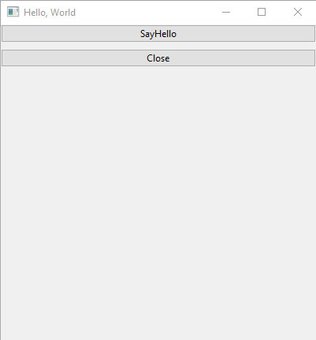
Say Hello¶
load "libui.ring"
oWindow = uiNewWindow( "Say Hello", 500, 80, True)
uiWindowOnClosing(oWindow,"closeApp()")
lbl1 = uiNewLabel("Name: ")
text1 = uiNewEntry()
btn1 = uiNewButton("SayHello")
uiButtonOnClicked(btn1,"sayHello()")
btn2 = uiNewButton("Close")
uiButtonOnClicked(btn2,"closeApp()")
lbl2 = uiNewLabel("")
g = uiNewGrid() uiGridSetPadded(g, 1) uiWindowSetChild(oWindow, g)
uiGridAppend(g, lbl1, 0, 0, 2, 1, 1, uiAlignCenter, 0, uiAlignCenter)
uiGridAppend(g, text1, 1, 0, 2, 1, 1, uiAlignFill, 0, uiAlignFill)
uiGridAppend(g, btn1, 0, 1, 1, 2, 1, uiAlignFill, 0, uiAlignFill)
uiGridAppend(g, btn2, 2, 1, 1, 1, 1, uiAlignFill, 0, uiAlignFill)
uiGridAppend(g, lbl2, 0, 3, 2, 1, 1, uiAlignCenter, 0, uiAlignCenter)
uiControlShow( oWindow )
uiMain()
func sayHello
uiLabelSetText(lbl2,"Hello " + uiEntryText(text1))
func closeApp
uiQuit()
Screen Shot:
 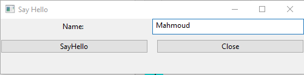
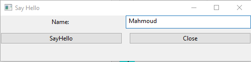

Control Gallery¶
# Sample ported to Ring
# Based on original sample from : https://github.com/andlabs/libui
load "libui.ring"
# Global Variables
slider = NULL
spinbox = NULL
pBar = NULL
entryOpen = NULL
entrySave = NULL
# Main Window
mainwin = uiNewWindow("libui Control Gallery", 640, 480, 1)
uiWindowOnClosing(mainwin, "onClosing()")
tab = uiNewTab()
uiWindowSetChild(mainwin, tab)
uiWindowSetMargined(mainwin, 1)
uiTabAppend(tab, "Basic Controls", makeBasicControlsPage())
uiTabSetMargined(tab, 0, 1)
uiTabAppend(tab, "Numbers and Lists", makeNumbersPage())
uiTabSetMargined(tab, 1, 1)
uiTabAppend(tab, "Data Choosers", makeDataChoosersPage())
uiTabSetMargined(tab, 2, 1)
uiControlShow(mainwin)
uiMain()
func onClosing
uiQuit()
func makeDataChoosersPage
hbox = uiNewHorizontalBox()
uiBoxSetPadded(hbox, 1)
vbox = uiNewVerticalBox()
uiBoxSetPadded(vbox, 1)
uiBoxAppend(hbox, vbox, 0)
uiBoxAppend(vbox,
uiNewDatePicker(),
0)
uiBoxAppend(vbox,
uiNewTimePicker(),
0)
uiBoxAppend(vbox,
uiNewDateTimePicker(),
0)
uiBoxAppend(vbox,
uiNewFontButton(),
0)
uiBoxAppend(vbox,
uiNewColorButton(),
0)
uiBoxAppend(hbox,
uiNewVerticalSeparator(),
0)
vbox = uiNewVerticalBox()
uiBoxSetPadded(vbox, 1)
uiBoxAppend(hbox, vbox, 1)
grid = uiNewGrid()
uiGridSetPadded(grid, 1)
uiBoxAppend(vbox, grid, 0)
button = uiNewButton("Open File")
entryOpen = uiNewEntry()
uiEntrySetReadOnly(entryOpen, 1)
uiButtonOnClicked(button, "onOpenFileClicked()")
uiGridAppend(grid, button,
0, 0, 1, 1,
0, uiAlignFill, 0, uiAlignFill)
uiGridAppend(grid, entryOpen,
1, 0, 1, 1,
1, uiAlignFill, 0, uiAlignFill)
button = uiNewButton("Save File")
entrySave = uiNewEntry()
uiEntrySetReadOnly(entrySave, 1)
uiButtonOnClicked(button, "onSaveFileClicked()")
uiGridAppend(grid, button,
0, 1, 1, 1,
0, uiAlignFill, 0, uiAlignFill)
uiGridAppend(grid, entrySave,
1, 1, 1, 1,
1, uiAlignFill, 0, uiAlignFill)
msggrid = uiNewGrid()
uiGridSetPadded(msggrid, 1)
uiGridAppend(grid, msggrid,
0, 2, 2, 1,
0, uiAlignCenter, 0, uiAlignStart)
button = uiNewButton("Message Box")
uiButtonOnClicked(button, "onMsgBoxClicked()")
uiGridAppend(msggrid, button,
0, 0, 1, 1,
0, uiAlignFill, 0, uiAlignFill)
button = uiNewButton("Error Box")
uiButtonOnClicked(button, "onMsgBoxErrorClicked()")
uiGridAppend(msggrid, button,
1, 0, 1, 1,
0, uiAlignFill, 0, uiAlignFill)
return hbox
func makeNumbersPage
hbox = uiNewHorizontalBox()
uiBoxSetPadded(hbox, 1)
group = uiNewGroup("Numbers")
uiGroupSetMargined(group, 1)
uiBoxAppend(hbox, group, 1)
vbox = uiNewVerticalBox()
uiBoxSetPadded(vbox, 1)
uiGroupSetChild(group, vbox)
spinbox = uiNewSpinbox(0, 100)
slider = uiNewSlider(0, 100)
pbar = uiNewProgressBar()
uiSpinboxOnChanged(spinbox, "onSpinboxChanged()")
uiSliderOnChanged(slider, "onSliderChanged()")
uiBoxAppend(vbox, spinbox, 0)
uiBoxAppend(vbox, slider, 0)
uiBoxAppend(vbox, pbar, 0)
ip = uiNewProgressBar()
uiProgressBarSetValue(ip, -1)
uiBoxAppend(vbox, ip, 0)
group = uiNewGroup("Lists")
uiGroupSetMargined(group, 1)
uiBoxAppend(hbox, group, 1)
vbox = uiNewVerticalBox()
uiBoxSetPadded(vbox, 1)
uiGroupSetChild(group, vbox)
cbox = uiNewCombobox()
uiComboboxAppend(cbox, "Combobox Item 1")
uiComboboxAppend(cbox, "Combobox Item 2")
uiComboboxAppend(cbox, "Combobox Item 3")
uiBoxAppend(vbox, cbox, 0)
ecbox = uiNewEditableCombobox()
uiEditableComboboxAppend(ecbox, "Editable Item 1")
uiEditableComboboxAppend(ecbox, "Editable Item 2")
uiEditableComboboxAppend(ecbox, "Editable Item 3")
uiBoxAppend(vbox, ecbox, 0)
rb = uiNewRadioButtons()
uiRadioButtonsAppend(rb, "Radio Button 1")
uiRadioButtonsAppend(rb, "Radio Button 2")
uiRadioButtonsAppend(rb, "Radio Button 3")
uiBoxAppend(vbox, rb, 0)
return hbox
func makeBasicControlsPage
vbox = uiNewVerticalBox()
uiBoxSetPadded(vbox, 1)
hbox = uiNewHorizontalBox()
uiBoxSetPadded(hbox, 1)
uiBoxAppend(vbox, hbox, 0)
uiBoxAppend(hbox,
uiNewButton("Button"),
0)
uiBoxAppend(hbox,
uiNewCheckbox("Checkbox"),
0)
uiBoxAppend(vbox,
uiNewLabel("This is a label. Right now, labels can only span one line."),
0)
uiBoxAppend(vbox,
uiNewHorizontalSeparator(),
0)
group = uiNewGroup("Entries")
uiGroupSetMargined(group, 1)
uiBoxAppend(vbox, group, 1)
entryForm = uiNewForm()
uiFormSetPadded(entryForm, 1)
uiGroupSetChild(group, entryForm)
uiFormAppend(entryForm,
"Entry",
uiNewEntry(),
0)
uiFormAppend(entryForm,
"Password Entry",
uiNewPasswordEntry(),
0)
uiFormAppend(entryForm,
"Search Entry",
uiNewSearchEntry(),
0)
uiFormAppend(entryForm,
"Multiline Entry",
uiNewMultilineEntry(),
1)
uiFormAppend(entryForm,
"Multiline Entry No Wrap",
uiNewNonWrappingMultilineEntry(),
1)
return vbox
func onSpinboxChanged
s = uiEventSpinBox()
uiSliderSetValue(slider, uiSpinboxValue(s));
uiProgressBarSetValue(pbar, uiSpinboxValue(s));
func onSliderChanged
s = uiEventSlider()
uiSpinboxSetValue(spinbox, uiSliderValue(s));
uiProgressBarSetValue(pbar, uiSliderValue(s));
func onOpenFileClicked
filename = uiOpenFile(mainwin)
if ISNULL(filename)
uiEntrySetText(entryOpen, "(cancelled)")
return
ok
uiEntrySetText(entryOpen, filename)
func onSaveFileClicked
filename = uiSaveFile(mainwin)
if ISNULL(filename)
uiEntrySetText(entrySave, "(cancelled)")
return
ok
uiEntrySetText(entrySave, filename)
func onMsgBoxClicked
uiMsgBox(mainwin,
"This is a normal message box.",
"More detailed information can be shown here.")
func onMsgBoxErrorClicked
uiMsgBoxError(mainwin,
"This message box describes an error.",
"More detailed information can be shown here.")
Screen Shot:
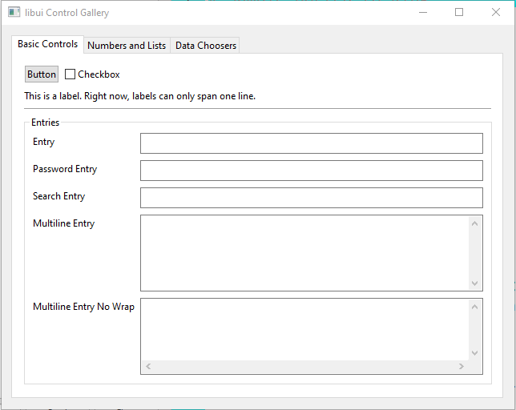
 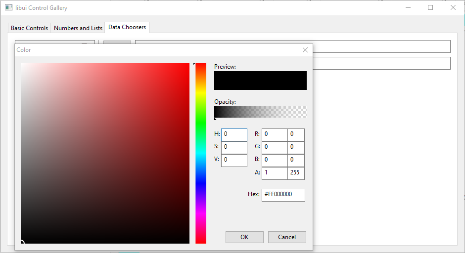
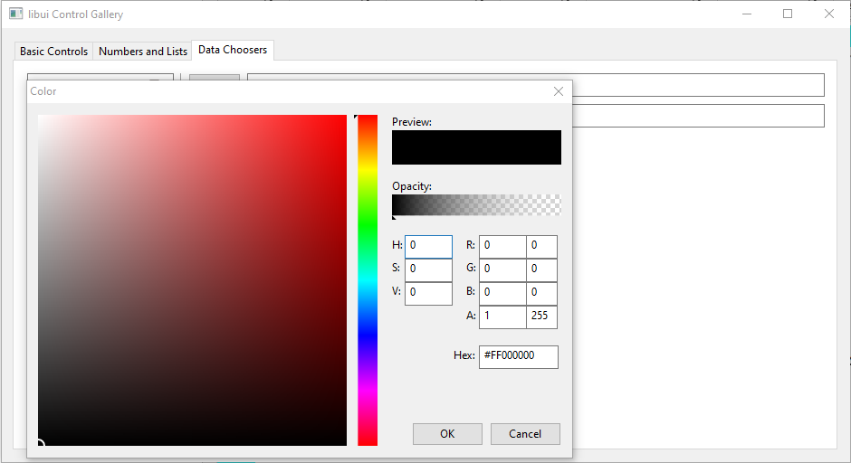
Say Something¶
# Sample ported to Ring
# Based on original sample from : https://github.com/andlabs/libui
load "libui.ring"
w = uiNewWindow("Hello", 320, 240, 0)
uiWindowSetMargined(w, 1)
b = uiNewVerticalBox()
uiBoxSetPadded(b, 1)
uiWindowSetChild(w, b)
e = uiNewMultilineEntry()
uiMultilineEntrySetReadOnly(e, 1)
btn = uiNewButton("Say Something")
uiButtonOnClicked(btn, "saySomething()")
uiBoxAppend(b, btn, 0)
uiBoxAppend(b, e, 1)
uiTimer(1000, "sayTime()")
uiWindowOnClosing(w, "onClosing()")
uiControlShow(w)
uiMain()
func saySomething
uiMultilineEntryAppend(e, "Saying something"+nl)
func sayTime
uiMultilineEntryAppend(e, Time()+nl)
func onClosing
uiQuit()
Screen Shot:


Using the Menubar¶
# Sample ported to Ring
# Based on original sample from : https://github.com/andlabs/libui
load "libui.ring"
# Create the Menubar
fileMenu = uiNewMenu("File")
newItem = uiMenuAppendItem(fileMenu, "New")
openItem = uiMenuAppendItem(fileMenu, "Open")
uiMenuAppendSeparator(fileMenu)
shouldQuitItem = uiMenuAppendCheckItem(fileMenu, "Should Quit")
quitItem = uiMenuAppendQuitItem(fileMenu)
editMenu = uiNewMenu("Edit")
undoItem = uiMenuAppendItem(editMenu, "Undo")
uiMenuItemDisable(undoItem)
uiMenuAppendSeparator(editMenu)
checkItem = uiMenuAppendCheckItem(editMenu, "Check Me\tTest")
accelItem = uiMenuAppendItem(editMenu, "A&ccele&&rator T_es__t")
prefsItem = uiMenuAppendPreferencesItem(editMenu)
testMenu = uiNewMenu("Test")
enabledItem = uiMenuAppendCheckItem(testMenu, "Enable Below Item")
uiMenuItemSetChecked(enabledItem, 1)
enableThisItem = uiMenuAppendItem(testMenu, "This Will Be Enabled")
uiMenuItemOnClicked(enabledItem, "enableItemTest(enableThisItem)")
forceCheckedItem = uiMenuAppendItem(testMenu, "Force Above Checked")
uiMenuItemOnClicked(forceCheckedItem, "forceOn()")
forceUncheckedItem = uiMenuAppendItem(testMenu, "Force Above Unchecked")
uiMenuItemOnClicked(forceUncheckedItem, "forceOff()")
uiMenuAppendSeparator(testMenu)
whatWindowItem = uiMenuAppendItem(testMenu, "What Window?")
uiMenuItemOnClicked(whatWindowItem, "whatWindow()")
moreTestsMenu = uiNewMenu("More Tests")
quitEnabledItem = uiMenuAppendCheckItem(moreTestsMenu, "Quit Item Enabled")
uiMenuItemSetChecked(quitEnabledItem, 1)
prefsEnabledItem = uiMenuAppendCheckItem(moreTestsMenu, "Preferences Item Enabled")
uiMenuItemSetChecked(prefsEnabledItem, 1)
aboutEnabledItem = uiMenuAppendCheckItem(moreTestsMenu, "About Item Enabled")
uiMenuItemSetChecked(aboutEnabledItem, 1)
uiMenuAppendSeparator(moreTestsMenu)
checkEnabledItem = uiMenuAppendCheckItem(moreTestsMenu, "Check Me Item Enabled")
uiMenuItemSetChecked(checkEnabledItem, 1)
multiMenu = uiNewMenu("Multi")
uiMenuAppendSeparator(multiMenu)
uiMenuAppendSeparator(multiMenu)
uiMenuAppendItem(multiMenu, "Item && Item && Item")
uiMenuAppendSeparator(multiMenu)
uiMenuAppendSeparator(multiMenu)
uiMenuAppendItem(multiMenu, "Item __ Item __ Item")
uiMenuAppendSeparator(multiMenu)
uiMenuAppendSeparator(multiMenu)
helpMenu = uiNewMenu("Help")
helpItem = uiMenuAppendItem(helpMenu, "Help")
aboutItem = uiMenuAppendAboutItem(helpMenu)
uiMenuItemOnClicked(quitEnabledItem, "enableItemTest(quitItem)")
uiMenuItemOnClicked(prefsEnabledItem, "enableItemTest(prefsItem)")
uiMenuItemOnClicked(aboutEnabledItem, "enableItemTest(aboutItem)")
uiMenuItemOnClicked(checkEnabledItem, "enableItemTest(checkItem)")
# Create the Window
oWindow = uiNewWindow( "Using the Menubar", 400, 400, True)
uiWindowOnClosing(oWindow,"closeApp()")
uiControlShow( oWindow )
uiMain()
func enableItemTest(data)
item = uiEventMenuItem()
if uiMenuItemChecked(item)
uiMenuItemEnable(data)
else
uiMenuItemDisable(data)
ok
func forceOn
uiMenuItemSetChecked(enabledItem, 1)
func forceOff
uiMenuItemSetChecked(enabledItem, 0)
func whatWindow
? "menu item clicked on window "
? oWindow
func closeApp
uiQuit()
Screen Shot:
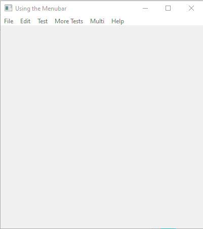
Drawing Sample¶
load "libui.ring"
oWindow = uiNewWindow( "Drawing Sample", 420, 450, True)
uiWindowOnClosing(oWindow,"closeApp()")
oAreaHandler = uiNewAreaHandler("draw()","","","","")
area = uiNewArea(oAreaHandler)
btnClose = uiNewButton("Close Application")
uiButtonOnClicked(btnClose,"closeApp()")
hbox = uiNewVerticalBox()
uiBoxSetPadded(hbox, 1)
uiBoxAppend(hbox,btnClose,0)
uiBoxAppend(hbox,area,1)
uiWindowSetChild(oWindow, hbox)
uiControlShow( oWindow )
uiMain()
func draw
Rectangle(0, 0, uiEventAreaWidth(), uiEventAreaHeight(), colorGray)
Rectangle(0, 0, 400, 400, colorWhite)
Rectangle(10, 10, 20, 20, colorRed)
Rectangle(30, 30, 30, 30, colorGreen)
Rectangle(60, 60, 40, 40, colorBlue)
# The Rectangle function is now part of RingLibUI as uiRectangle()
func Rectangle x,y,width,height,color
oContext = uiEventContext()
oBrush = uiNewSolidBrush(color)
oPath = uiDrawNewPath(uiDrawFillModeWinding)
uiDrawPathAddRectangle(oPath, x, y, width, height)
uiDrawPathEnd(oPath)
uiDrawFill(oContext, oPath, oBrush)
uiDrawFreePath(oPath)
func closeApp
uiQuit()
Screen Shot:
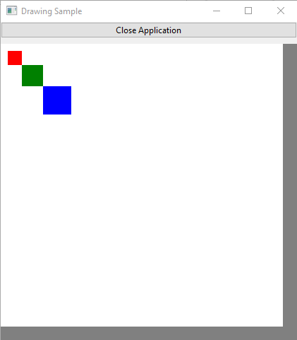Draw Gradient¶
load "libui.ring"
oWindow = uiNewWindow( "Draw Gradient", 500, 500, True)
uiWindowOnClosing(oWindow,"closeApp()")
oAreaHandler = uiNewAreaHandler("draw()","","","","")
area = uiNewArea(oAreaHandler)
btnClose = uiNewButton("Close Application")
uiButtonOnClicked(btnClose,"closeApp()")
hbox = uiNewVerticalBox()
uiBoxSetPadded(hbox, 1)
uiBoxAppend(hbox,btnClose,0)
uiBoxAppend(hbox,area,1)
uiWindowSetChild(oWindow, hbox)
uiControlShow( oWindow )
uiMain()
func draw
nWidth = uiEventAreaWidth() nHeight = uiEventAreaHeight()
uiRectangle(0, 0, nWidth, nHeight, colorBlue)
for y=0 to 255 step 2
customColor = y
uiRectangle(0, y, nWidth, y+1, customColor)
next
func closeApp
uiQuit()
Screen Shot:
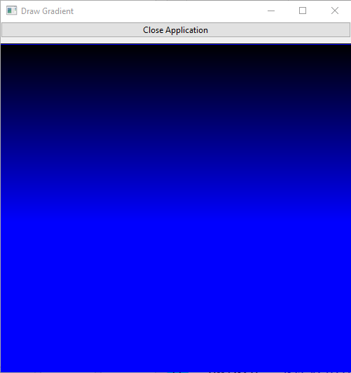Histogram¶
# Sample ported to Ring
# Based on original sample from : https://github.com/andlabs/libui
load "libui.ring"
datapoints = list(10)
currentPoint = -1
// some metrics
xoffLeft = 20 /* histogram margins */
yoffTop = 20
xoffRight = 20
yoffBottom = 20
pointRadius = 5
histogram = NULL
mainwin = NULL
colorButton = NULL
func pointLocations width, height, xs, ys
xincr = width / 9 // 10 - 1 to make the last point be at the end
yincr = height / 100
for i = 1 to 10
// get the value of the point
n = uiSpinboxValue(datapoints[i])
// because y=0 is the top but n=0 is the bottom, we need to flip
n = 100 - n;
xs[i] = xincr * i
ys[i] = yincr * n
next
func constructGraph width, height, extend
xs = list(10)
ys = list(10)
pointLocations(width, height, xs, ys)
path = uiDrawNewPath(uiDrawFillModeWinding)
uiDrawPathNewFigure(path, xs[1], ys[1])
for i = 2 to 10
uiDrawPathLineTo(path, xs[i], ys[i])
next
if extend
uiDrawPathLineTo(path, width, height)
uiDrawPathLineTo(path, 0, height)
uiDrawPathCloseFigure(path)
ok
uiDrawPathEnd(path)
return path
func graphSize clientWidth, clientHeight
graphWidth = clientWidth - xoffLeft - xoffRight
graphHeight = clientHeight - yoffTop - yoffBottom
return [graphWidth,graphHeight]
func handlerDraw
// fill the area with white
Brush = uiNewSolidBrush(0)
setSolidBrush(brush, colorWhite, 1.0)
path = uiDrawNewPath(uiDrawFillModeWinding)
uiDrawPathAddRectangle(path, 0, 0, uiEventAreaWidth(), uiEventAreaHeight())
uiDrawPathEnd(path)
uiDrawFill(uiEventContext(), path, brush)
uiDrawFreePath(path)
// figure out dimensions
aOut = graphSize(uiEventAreaWidth(), uiEventAreaHeight())
graphWidth = aOut[1]
graphHeight = aOut[2]
sp = new_managed_uiDrawStrokeParams()
set_uiDrawStrokeParams_Cap(sp,uiDrawLineCapFlat)
set_uiDrawStrokeParams_Join(sp,uiDrawLineJoinMiter)
set_uiDrawStrokeParams_Thickness(sp,2)
set_uiDrawStrokeParams_MiterLimit(sp,uiDrawDefaultMiterLimit)
// draw the axes
setSolidBrush(brush, colorBlack, 1.0)
path = uiDrawNewPath(uiDrawFillModeWinding)
uiDrawPathNewFigure(path,
xoffLeft, yoffTop)
uiDrawPathLineTo(path,
xoffLeft, yoffTop + graphHeight)
uiDrawPathLineTo(path,
xoffLeft + graphWidth, yoffTop + graphHeight)
uiDrawPathEnd(path)
uiDrawStroke(uiEventContext(), path, brush, sp)
uiDrawFreePath(path)
// now transform the coordinate space so (0, 0) is the top-left corner of the graph
m = new_managed_uiDrawMatrix()
uiDrawMatrixSetIdentity(m)
uiDrawMatrixTranslate(m, xoffLeft, yoffTop)
uiDrawTransform(uiEventContext(), m)
// now get the color for the graph itself and set up the brush
GraphR=0
GraphG=0
GraphB=0
GraphA=0
uiColorButtonColor(colorButton, :graphR,
:graphG,
:graphB,
:graphA)
uiSetBrushType(brush,uiDrawBrushTypeSolid)
uiSetBrushR(brush,graphR)
uiSetBrushG(brush,graphG)
uiSetBrushB(brush,graphB)
// we set brush->A below to different values for the fill and stroke
// now create the fill for the graph below the graph line
path = constructGraph(graphWidth, graphHeight, 1)
uiSetBrushA(brush, graphA / 2)
uiDrawFill(uiEventContext(), path, brush)
uiDrawFreePath(path)
// now draw the histogram line
path = constructGraph(graphWidth, graphHeight, 0)
uiSetBrushA(brush,graphA)
uiDrawStroke(uiEventContext(), path, brush, sp)
uiDrawFreePath(path)
// now draw the point being hovered over
if currentPoint != -1
xs = list(10)
ys = list(10)
pointLocations(graphWidth, graphHeight, xs, ys)
path = uiDrawNewPath(uiDrawFillModeWinding)
uiDrawPathNewFigureWithArc(path,
xs[currentPoint], ys[currentPoint],
pointRadius,
0, 6.23, // TODO pi
0)
uiDrawPathEnd(path)
// use the same brush as for the histogram lines
uiDrawFill(uiEventContext(), path, brush)
uiDrawFreePath(path)
ok
func inPoint x, y, xtest, ytest
// TODO switch to using a matrix
x -= xoffLeft
y -= yoffTop
return (x >= xtest - pointRadius) &&
(x <= xtest + pointRadius) &&
(y >= ytest - pointRadius) &&
(y <= ytest + pointRadius)
func handlerMouseEvent
xs = list(10)
ys = list(10)
aOut = graphSize(uiEventAreaWidth(), uiEventAreaHeight())
graphWidth = aOut[1]
graphHeight = aOut[2]
pointLocations(graphWidth, graphHeight, xs, ys)
e = uiEventAreaMouseEvent()
eX = get_uiAreaMouseEvent_X(e)
eY = get_uiAreaMouseEvent_Y(e)
for i=1 to 10
if inPoint(eX, eY, xs[i], ys[i])
exit
ok
next
if i = 11 // not in a point
i = -1
ok
currentPoint = i
uiAreaQueueRedrawAll(histogram)
func onDatapointChanged
uiAreaQueueRedrawAll(histogram)
func onColorChanged
uiAreaQueueRedrawAll(histogram);
func onClosing
uiControlDestroy(uiControl(mainwin))
uiQuit()
return 0
func shouldQuit
uiControlDestroy(uiControl(mainwin))
func main
uiOnShouldQuit("shouldQuit()")
mainwin = uiNewWindow("Histogram Sample", 800, 480, 1)
uiWindowSetMargined(mainwin, 1)
uiWindowOnClosing(mainwin, "onClosing()")
Brush = uiNewSolidBrush(0)
hbox = uiNewHorizontalBox()
uiBoxSetPadded(hbox, 1)
uiWindowSetChild(mainwin, uiControl(hbox))
vbox = uiNewVerticalBox()
uiBoxSetPadded(vbox, 1)
uiBoxAppend(hbox, uiControl(vbox), 0)
srandom(clock());
for i=1 to 10
datapoints[i] = uiNewSpinbox(0, 100)
uiSpinboxSetValue(datapoints[i], random() % 101)
uiSpinboxOnChanged(datapoints[i], "onDatapointChanged()")
uiBoxAppend(vbox, uiControl(datapoints[i]), 0)
next
colorButton = uiNewColorButton()
setSolidBrush(brush, colorDodgerBlue, 1.0)
uiColorButtonSetColor(colorButton,
uiBrushR(brush),
uiBrushG(brush),
uiBrushB(brush),
uiBrushA(brush))
uiColorButtonOnChanged(colorButton, "onColorChanged()")
uiBoxAppend(vbox, uiControl(colorButton), 0)
oAreaHandler = uiNewAreaHandler("handlerDraw()","handlerMouseEvent()","","","")
histogram = uiNewArea(oAreaHandler)
uiBoxAppend(hbox, uiControl(histogram), 1)
uiControlShow(uiControl(mainwin))
uiMain()
Screen Shot:

Text Drawing¶
# Sample ported to Ring
# Based on original sample from : https://github.com/andlabs/libui
load "libui.ring"
# Global Variables
mainwin = NULL
area = NULL
handler = NULL
fontButton = NULL
alignment = NULL
attrstr = NULL
func appendWithAttribute what, attr, attr2
nStart = uiAttributedStringLen(attrstr)
nEnd = nStart + len(what)
uiAttributedStringAppendUnattributed(attrstr, what)
uiAttributedStringSetAttribute(attrstr, attr, nStart, nEnd)
if ! ISNULL(attr2)
uiAttributedStringSetAttribute(attrstr, attr2, nStart, nEnd)
ok
func makeAttributedString
attrstr = uiNewAttributedString("Drawing strings with libui is done with the uiAttributedString and uiDrawTextLayout objects."+nl+
"uiAttributedString lets you have a variety of attributes: ")
attr = uiNewFamilyAttribute("Courier New")
appendWithAttribute("font family", attr, NULL)
uiAttributedStringAppendUnattributed(attrstr, ", ")
attr = uiNewSizeAttribute(18)
appendWithAttribute("font size", attr, NULL)
uiAttributedStringAppendUnattributed(attrstr, ", ")
attr = uiNewWeightAttribute(uiTextWeightBold)
appendWithAttribute("font weight", attr, NULL)
uiAttributedStringAppendUnattributed(attrstr, ", ")
attr = uiNewItalicAttribute(uiTextItalicItalic)
appendWithAttribute("font italicness", attr, NULL)
uiAttributedStringAppendUnattributed(attrstr, ", ")
attr = uiNewStretchAttribute(uiTextStretchCondensed)
appendWithAttribute("font stretch", attr, NULL)
uiAttributedStringAppendUnattributed(attrstr, ", ")
attr = uiNewColorAttribute(0.75, 0.25, 0.5, 0.75)
appendWithAttribute("text color", attr, NULL)
uiAttributedStringAppendUnattributed(attrstr, ", ")
attr = uiNewBackgroundAttribute(0.5, 0.5, 0.25, 0.5)
appendWithAttribute("text background color", attr, NULL)
uiAttributedStringAppendUnattributed(attrstr, ", ")
attr = uiNewUnderlineAttribute(uiUnderlineSingle)
appendWithAttribute("underline style", attr, NULL)
uiAttributedStringAppendUnattributed(attrstr, ", ")
uiAttributedStringAppendUnattributed(attrstr, "and ")
attr = uiNewUnderlineAttribute(uiUnderlineDouble)
attr2 = uiNewUnderlineColorAttribute(uiUnderlineColorCustom, 1.0, 0.0, 0.5, 1.0)
appendWithAttribute("underline color", attr, attr2)
uiAttributedStringAppendUnattributed(attrstr, ". ")
uiAttributedStringAppendUnattributed(attrstr, "Furthermore, there are attributes allowing for ")
attr = uiNewUnderlineAttribute(uiUnderlineSuggestion)
attr2 = uiNewUnderlineColorAttribute(uiUnderlineColorSpelling, 0, 0, 0, 0)
appendWithAttribute("special underlines for indicating spelling errors", attr, attr2)
uiAttributedStringAppendUnattributed(attrstr, " (and other types of errors) ")
uiAttributedStringAppendUnattributed(attrstr, "and control over OpenType features such as ligatures (for instance, ")
otf = uiNewOpenTypeFeatures()
uiOpenTypeFeaturesAdd(otf, ASCII('l'), ASCII('i'), ASCII('g'), ASCII('a'), 0)
attr = uiNewFeaturesAttribute(otf)
appendWithAttribute("afford", attr, NULL)
uiAttributedStringAppendUnattributed(attrstr, " vs. ")
uiOpenTypeFeaturesAdd(otf, ASCII('l'), ASCII('i'), ASCII('g'), ASCII('a'), 1)
attr = uiNewFeaturesAttribute(otf)
appendWithAttribute("afford", attr, NULL)
uiFreeOpenTypeFeatures(otf)
uiAttributedStringAppendUnattributed(attrstr, ").\n")
uiAttributedStringAppendUnattributed(attrstr, "Use the controls opposite to the text to control properties of the text.")
func handlerDraw
defaultfont = new_uiFontDescriptor()
params = new_uiDrawTextLayoutParams()
set_uiDrawTextLayoutParams_String(params,attrstr)
uiFontButtonFont(fontButton, defaultFont)
set_uiDrawTextLayoutParams_DefaultFont(params,defaultFont)
set_uiDrawTextLayoutParams_Width(params,uiEventAreaWidth())
set_uiDrawTextLayoutParams_Align(params,uiComboboxSelected(alignment))
textLayout = uiDrawNewTextLayout(params)
uiDrawText(uiEventContext(), textLayout, 0, 0)
uiDrawFreeTextLayout(textLayout)
uiFreeFontButtonFont(defaultFont)
func onFontChanged
uiAreaQueueRedrawAll(area)
func onComboboxSelected
uiAreaQueueRedrawAll(area)
func onClosing
uiControlDestroy(mainwin)
uiQuit()
func shouldQuit
uiControlDestroy(mainwin)
func main
uiOnShouldQuit("shouldQuit()")
makeAttributedString()
mainwin = uiNewWindow("libui Text-Drawing Example", 640, 480, 1)
uiWindowSetMargined(mainwin, 1)
uiWindowOnClosing(mainwin, "onClosing()")
hbox = uiNewHorizontalBox()
uiBoxSetPadded(hbox, 1)
uiWindowSetChild(mainwin, hbox)
vbox = uiNewVerticalBox()
uiBoxSetPadded(vbox, 1)
uiBoxAppend(hbox, vbox, 0)
fontButton = uiNewFontButton()
uiFontButtonOnChanged(fontButton, "onFontChanged()")
uiBoxAppend(vbox, fontButton, 0)
form = uiNewForm()
uiFormSetPadded(form, 1)
uiBoxAppend(vbox, form, 0)
alignment = uiNewCombobox()
uiComboboxAppend(alignment, "Left")
uiComboboxAppend(alignment, "Center")
uiComboboxAppend(alignment, "Right")
uiComboboxSetSelected(alignment, 0) // start with left alignment
uiComboboxOnSelected(alignment, "onComboboxSelected()")
uiFormAppend(form, "Alignment", alignment, 0)
oAreaHandler = uiNewAreaHandler("handlerDraw()","","","","")
area = uiNewArea(oAreaHandler)
uiBoxAppend(hbox, area, 1)
uiControlShow(mainwin)
uiMain()
uiFreeAttributedString(attrstr)
Screen Shot:

 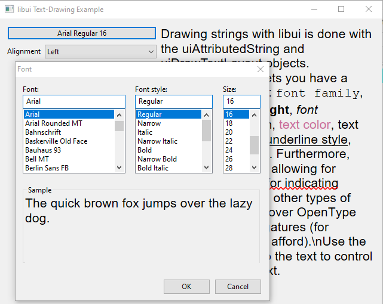
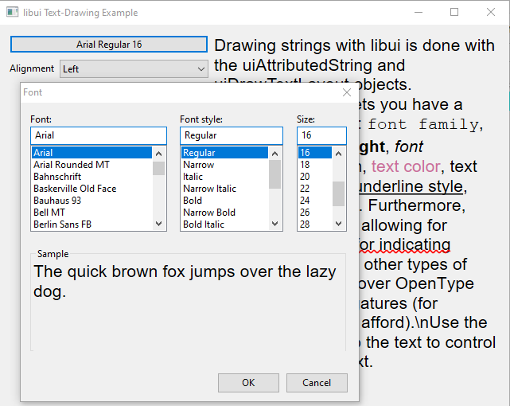
More Drawing Samples¶
Example (1):
# Sample ported to Ring
# Based on original sample from : https://github.com/andlabs/libui
load "libui.ring"
oWindow = uiNewWindow( "Drawing Sample", 400, 400, True)
uiWindowOnClosing(oWindow,"closeApp()")
oAreaHandler = uiNewAreaHandler("draw()","","","","")
area = uiNewArea(oAreaHandler)
btnClose = uiNewButton("Close Application")
uiButtonOnClicked(btnClose,"closeApp()")
hbox = uiNewVerticalBox()
uiBoxSetPadded(hbox, 1)
uiBoxAppend(hbox,btnClose,0)
uiBoxAppend(hbox,area,1)
uiWindowSetChild(oWindow, hbox)
uiControlShow( oWindow )
uiMain()
func draw
nWidth = uiEventAreaWidth() nHeight = uiEventAreaHeight()
source = new_uiDrawBrush()
sp = new_uiDrawStrokeParams()
source = uiNewSolidBrush(colorBlue)
set_uiDrawStrokeParams_Cap(sp,uiDrawLineCapFlat)
set_uiDrawStrokeParams_Join(sp,uiDrawLineJoinMiter)
set_uiDrawStrokeParams_MiterLimit(sp,uiDrawDefaultMiterLimit)
set_uiDrawStrokeParams_NumDashes(sp,0)
set_uiDrawStrokeParams_DashPhase(sp,0)
set_uiDrawStrokeParams_Thickness(sp,40.96)
path = uiDrawNewPath(uiDrawFillModeWinding)
uiDrawPathNewFigure(path, 76.8, 84.48)
uiDrawPathLineTo(path, 76.8 + 51.2, 84.48 -51.2)
uiDrawPathLineTo(path, 76.8 + 51.2 + 51.2, 84.48 - 51.2 + 51.2)
uiDrawPathEnd(path)
set_uiDrawStrokeParams_Join(sp,uiDrawLineJoinMiter)
uiDrawStroke(uiEventContext(), path, source, sp)
uiDrawFreePath(path)
path = uiDrawNewPath(uiDrawFillModeWinding)
uiDrawPathNewFigure(path, 76.8, 161.28)
uiDrawPathLineTo(path, 76.8 + 51.2, 161.28 -51.2)
uiDrawPathLineTo(path, 76.8 + 51.2 + 51.2, 161.28 - 51.2 + 51.2)
uiDrawPathEnd(path)
set_uiDrawStrokeParams_Join(sp,uiDrawLineJoinBevel)
uiDrawStroke(uiEventContext(), path, source, sp)
uiDrawFreePath(path)
path = uiDrawNewPath(uiDrawFillModeWinding)
uiDrawPathNewFigure(path, 76.8, 238.08)
uiDrawPathLineTo(path, 76.8 + 51.2, 238.08 -51.2)
uiDrawPathLineTo(path, 76.8 + 51.2 + 51.2, 238.08 - 51.2 + 51.2)
uiDrawPathEnd(path)
set_uiDrawStrokeParams_Join(sp,uiDrawLineJoinRound)
uiDrawStroke(uiEventContext(), path, source, sp)
uiDrawFreePath(path)
func closeApp
uiQuit()
Screen Shot:

Example (2):
# Sample ported to Ring
# Based on original sample from : https://github.com/andlabs/libui
load "libui.ring"
oWindow = uiNewWindow( "Drawing Sample", 400, 400, True)
uiWindowOnClosing(oWindow,"closeApp()")
oAreaHandler = uiNewAreaHandler("draw()","","","","")
area = uiNewArea(oAreaHandler)
btnClose = uiNewButton("Close Application")
uiButtonOnClicked(btnClose,"closeApp()")
hbox = uiNewVerticalBox()
uiBoxSetPadded(hbox, 1)
uiBoxAppend(hbox,btnClose,0)
uiBoxAppend(hbox,area,1)
uiWindowSetChild(oWindow, hbox)
uiControlShow( oWindow )
uiMain()
func draw
nWidth = uiEventAreaWidth() nHeight = uiEventAreaHeight()
source = new_uiDrawBrush()
sp = new_uiDrawStrokeParams()
source = uiNewSolidBrush(colorBlack)
set_uiDrawStrokeParams_Cap(sp,uiDrawLineCapFlat)
set_uiDrawStrokeParams_Join(sp,uiDrawLineJoinMiter)
set_uiDrawStrokeParams_MiterLimit(sp,uiDrawDefaultMiterLimit)
set_uiDrawStrokeParams_NumDashes(sp,0)
set_uiDrawStrokeParams_DashPhase(sp,0)
set_uiDrawStrokeParams_Thickness(sp,30)
set_uiDrawStrokeParams_Cap(sp,uiDrawLineCapFlat)
path = uiDrawNewPath(uiDrawFillModeWinding)
uiDrawPathNewFigure(path, 64.0, 50.0)
uiDrawPathLineTo(path, 64.0, 200.0)
uiDrawPathEnd(path)
uiDrawStroke(uiEventContext(), path, source, sp)
uiDrawFreePath(path)
set_uiDrawStrokeParams_Cap(sp,uiDrawLineCapRound)
path = uiDrawNewPath(uiDrawFillModeWinding)
uiDrawPathNewFigure(path, 128.0, 50.0)
uiDrawPathLineTo(path, 128.0, 200.0)
uiDrawPathEnd(path)
uiDrawStroke(uiEventContext(), path, source, sp)
uiDrawFreePath(path)
set_uiDrawStrokeParams_Cap(sp,uiDrawLineCapSquare)
path = uiDrawNewPath(uiDrawFillModeWinding)
uiDrawPathNewFigure(path, 192.0, 50.0)
uiDrawPathLineTo(path, 192.0, 200.0)
uiDrawPathEnd(path)
uiDrawStroke(uiEventContext(), path, source, sp)
uiDrawFreePath(path)
// draw helping lines
// keep the square cap to match the reference picture on the cairo website
uiCrSourceRGBA(source, 1, 0.2, 0.2, 1)
set_uiDrawStrokeParams_Thickness(sp,2.56)
path = uiDrawNewPath(uiDrawFillModeWinding)
uiDrawPathNewFigure(path, 64.0, 50.0)
uiDrawPathLineTo(path, 64.0, 200.0)
uiDrawPathNewFigure(path, 128.0, 50.0)
uiDrawPathLineTo(path, 128.0, 200.0)
uiDrawPathNewFigure(path, 192.0, 50.0)
uiDrawPathLineTo(path, 192.0, 200.0)
uiDrawPathEnd(path)
uiDrawStroke(uiEventContext(), path, source, sp)
uiDrawFreePath(path)
func closeApp
uiQuit()
Screen Shot:
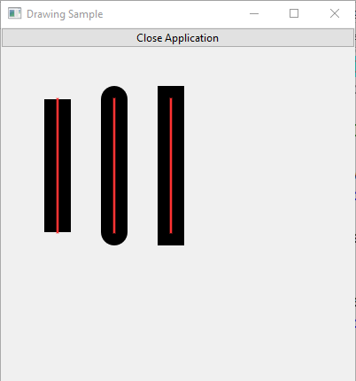Example (3):
# Sample ported to Ring
# Based on original sample from : https://github.com/andlabs/libui
load "libui.ring"
oWindow = uiNewWindow( "Drawing Sample", 260, 300, True)
uiWindowOnClosing(oWindow,"closeApp()")
oAreaHandler = uiNewAreaHandler("draw()","","","","")
area = uiNewArea(oAreaHandler)
btnClose = uiNewButton("Close Application")
uiButtonOnClicked(btnClose,"closeApp()")
hbox = uiNewVerticalBox()
uiBoxSetPadded(hbox, 1)
uiBoxAppend(hbox,btnClose,0)
uiBoxAppend(hbox,area,1)
uiWindowSetChild(oWindow, hbox)
uiControlShow( oWindow )
uiMain()
func draw
nWidth = uiEventAreaWidth() nHeight = uiEventAreaHeight()
source = new_uiDrawBrush()
sp = new_uiDrawStrokeParams()
x = 25.6
y = 25.6
width = 204.8
height = 204.8
aspect = 1.0
corner_radius = height
radius = corner_radius / aspect
degrees = uiPi / 180.0
source = uiNewSolidBrush(colorBlue)
set_uiDrawStrokeParams_Cap(sp,uiDrawLineCapFlat)
set_uiDrawStrokeParams_Join(sp,uiDrawLineJoinMiter)
set_uiDrawStrokeParams_MiterLimit(sp,uiDrawDefaultMiterLimit)
set_uiDrawStrokeParams_NumDashes(sp,0)
set_uiDrawStrokeParams_DashPhase(sp,0)
set_uiDrawStrokeParams_Thickness(sp,30)
path = uiDrawNewPath(uiDrawFillModeWinding)
// top right corner
uiDrawPathNewFigureWithArc(path,
x + width - radius, y + radius,
radius,
-90 * degrees, uiPi / 2,
0)
// bottom right corner
uiDrawPathArcTo(path,
x + width - radius, y + height - radius,
radius,
0 * degrees, uiPi / 2,
0)
// bottom left corner
uiDrawPathArcTo(path,
x + radius, y + height - radius,
radius,
90 * degrees, uiPi / 2,
0)
// top left corner
uiDrawPathArcTo(path,
x + radius, y + radius,
radius,
180 * degrees, uiPi / 2,
0)
uiDrawPathCloseFigure(path)
uiDrawPathEnd(path)
uiCrSourceRGBA(source, 0.5, 0.5, 1, 1)
uiDrawFill(uiEventContext(), path, source)
uiCrSourceRGBA(source, 0.5, 0, 0, 0.5)
set_uiDrawStrokeParams_Thickness(sp,10)
uiDrawStroke(uiEventContext(), path, source, sp)
uiDrawFreePath(path)
func closeApp
uiQuit()
Screen Shot:
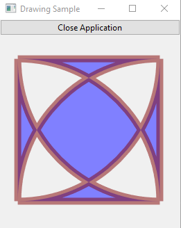Example (4):
# Sample ported to Ring
# Based on original sample from : https://github.com/andlabs/libui
load "libui.ring"
oWindow = uiNewWindow( "Drawing Sample", 300, 300, True)
uiWindowOnClosing(oWindow,"closeApp()")
oAreaHandler = uiNewAreaHandler("draw()","","","","")
area = uiNewArea(oAreaHandler)
btnClose = uiNewButton("Close Application")
uiButtonOnClicked(btnClose,"closeApp()")
hbox = uiNewVerticalBox()
uiBoxSetPadded(hbox, 1)
uiBoxAppend(hbox,btnClose,0)
uiBoxAppend(hbox,area,1)
uiWindowSetChild(oWindow, hbox)
uiControlShow( oWindow )
uiMain()
func draw
nWidth = uiEventAreaWidth() nHeight = uiEventAreaHeight()
source = new_uiDrawBrush()
sp = new_uiDrawStrokeParams()
source = uiNewSolidBrush(colorBlue)
set_uiDrawStrokeParams_Cap(sp,uiDrawLineCapFlat)
set_uiDrawStrokeParams_Join(sp,uiDrawLineJoinMiter)
set_uiDrawStrokeParams_MiterLimit(sp,uiDrawDefaultMiterLimit)
set_uiDrawStrokeParams_NumDashes(sp,0)
set_uiDrawStrokeParams_DashPhase(sp,0)
path = uiDrawNewPath(uiDrawFillModeWinding)
uiDrawPathNewFigure(path, 50.0, 75.0)
uiDrawPathLineTo(path, 200.0, 75.0)
uiDrawPathNewFigure(path, 50.0, 125.0)
uiDrawPathLineTo(path, 200.0, 125.0)
uiDrawPathNewFigure(path, 50.0, 175.0)
uiDrawPathLineTo(path, 200.0, 175.0)
uiDrawPathEnd(path)
set_uiDrawStrokeParams_Thickness(sp,30)
set_uiDrawStrokeParams_Cap(sp,uiDrawLineCapRound)
uiDrawStroke(uiEventContext(), path, source, sp)
uiDrawFreePath(path)
func closeApp
uiQuit()
Screen Shot:
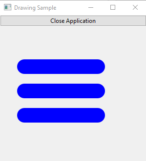Example (5):
# Sample ported to Ring
# Based on original sample from : https://github.com/andlabs/libui
load "libui.ring"
oWindow = uiNewWindow( "Drawing Sample", 260, 300, True)
uiWindowOnClosing(oWindow,"closeApp()")
oAreaHandler = uiNewAreaHandler("draw()","","","","")
area = uiNewArea(oAreaHandler)
btnClose = uiNewButton("Close Application")
uiButtonOnClicked(btnClose,"closeApp()")
hbox = uiNewVerticalBox()
uiBoxSetPadded(hbox, 1)
uiBoxAppend(hbox,btnClose,0)
uiBoxAppend(hbox,area,1)
uiWindowSetChild(oWindow, hbox)
uiControlShow( oWindow )
uiMain()
func draw
nWidth = uiEventAreaWidth() nHeight = uiEventAreaHeight()
source = new_uiDrawBrush()
sp = new_uiDrawStrokeParams()
m = new_uiDrawMatrix()
source = uiNewSolidBrush(colorBlue)
set_uiDrawStrokeParams_Cap(sp,uiDrawLineCapFlat)
set_uiDrawStrokeParams_Join(sp,uiDrawLineJoinMiter)
set_uiDrawStrokeParams_MiterLimit(sp,uiDrawDefaultMiterLimit)
set_uiDrawStrokeParams_NumDashes(sp,0)
set_uiDrawStrokeParams_DashPhase(sp,0)
set_uiDrawStrokeParams_Thickness(sp,6)
path = uiDrawNewPath(uiDrawFillModeAlternate)
uiDrawPathAddRectangle(path, 12, 12, 232, 70)
uiDrawPathNewFigureWithArc(path,
64, 64,
40,
0, 2*uiPi,
0)
uiDrawPathNewFigureWithArc(path,
192, 64,
40,
0, -2*uiPi,
1)
uiDrawPathEnd(path)
uicrsourcergba(source, 0, 0.7, 0, 1)
uiDrawFill(uiEventContext(), path, source)
uicrsourcergba(source, 0, 0, 0, 1)
uiDrawStroke(uiEventContext(), path, source, sp)
uiDrawFreePath(path)
uiDrawMatrixSetIdentity(m)
uiDrawMatrixTranslate(m, 0, 128)
uiDrawTransform(uiEventContext(), m)
path = uiDrawNewPath(uiDrawFillModeWinding)
uiDrawPathAddRectangle(path, 12, 12, 232, 70)
uiDrawPathNewFigureWithArc(path,
64, 64,
40,
0, 2*uiPi,
0)
uiDrawPathNewFigureWithArc(path,
192, 64,
40,
0, -2*uiPi,
1)
uiDrawPathEnd(path)
uicrsourcergba(source, 0, 0, 0.9, 1)
uiDrawFill(uiEventContext(), path, source)
uicrsourcergba(source, 0, 0, 0, 1)
uiDrawStroke(uiEventContext(), path, source, sp)
uiDrawFreePath(path)
func closeApp
uiQuit()
Screen Shot:
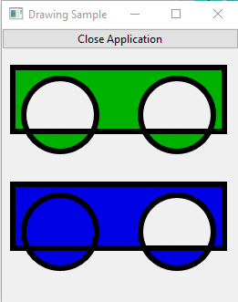Example (6):
# Sample ported to Ring
# Based on original sample from : https://github.com/andlabs/libui
load "libui.ring"
oWindow = uiNewWindow( "Drawing Sample", 260, 300, True)
uiWindowOnClosing(oWindow,"closeApp()")
oAreaHandler = uiNewAreaHandler("draw()","","","","")
area = uiNewArea(oAreaHandler)
btnClose = uiNewButton("Close Application")
uiButtonOnClicked(btnClose,"closeApp()")
hbox = uiNewVerticalBox()
uiBoxSetPadded(hbox, 1)
uiBoxAppend(hbox,btnClose,0)
uiBoxAppend(hbox,area,1)
uiWindowSetChild(oWindow, hbox)
uiControlShow( oWindow )
uiMain()
func draw
nWidth = uiEventAreaWidth() nHeight = uiEventAreaHeight()
source = new_uiDrawBrush()
sp = new_uiDrawStrokeParams()
source = uiNewSolidBrush(colorBlue)
set_uiDrawStrokeParams_Cap(sp,uiDrawLineCapFlat)
set_uiDrawStrokeParams_Join(sp,uiDrawLineJoinMiter)
set_uiDrawStrokeParams_MiterLimit(sp,uiDrawDefaultMiterLimit)
set_uiDrawStrokeParams_NumDashes(sp,0)
set_uiDrawStrokeParams_DashPhase(sp,0)
path = uiDrawNewPath(uiDrawFillModeWinding)
uiDrawPathNewFigure(path, 128.0, 25.6)
uiDrawPathLineTo(path, 230.4, 230.4)
uiDrawPathLineTo(path, 230.4 - 102.4, 230.4 + 0.0)
uiDrawPathBezierTo(path, 51.2, 230.4, 51.2, 128.0, 128.0, 128.0)
uiDrawPathCloseFigure(path)
uiDrawPathNewFigure(path, 64.0, 25.6)
uiDrawPathLineTo(path, 64.0 + 51.2, 25.6 + 51.2)
uiDrawPathLineTo(path, 64.0 + 51.2 -51.2, 25.6 + 51.2 + 51.2)
uiDrawPathLineTo(path, 64.0 + 51.2 -51.2 -51.2, 25.6 + 51.2 + 51.2 -51.2)
uiDrawPathCloseFigure(path)
uiDrawPathEnd(path)
set_uiDrawStrokeParams_Thickness(sp,10)
uicrsourcergba(source, 0, 0, 1, 1)
uiDrawFill(uiEventContext(), path, source)
uicrsourcergba(source, 0, 0, 0, 1)
uiDrawStroke(uiEventContext(), path, source, sp)
uiDrawFreePath(path)
func closeApp
uiQuit()
Screen Shot:

Example (7):
# Sample ported to Ring
# Based on original sample from : https://github.com/andlabs/libui
load "libui.ring"
oWindow = uiNewWindow( "Drawing Sample", 260, 300, True)
uiWindowOnClosing(oWindow,"closeApp()")
oAreaHandler = uiNewAreaHandler("draw()","","","","")
area = uiNewArea(oAreaHandler)
btnClose = uiNewButton("Close Application")
uiButtonOnClicked(btnClose,"closeApp()")
hbox = uiNewVerticalBox()
uiBoxSetPadded(hbox, 1)
uiBoxAppend(hbox,btnClose,0)
uiBoxAppend(hbox,area,1)
uiWindowSetChild(oWindow, hbox)
uiControlShow( oWindow )
uiMain()
func draw
nWidth = uiEventAreaWidth() nHeight = uiEventAreaHeight()
source = new_uiDrawBrush()
sp = new_uiDrawStrokeParams()
source = uiNewSolidBrush(colorBlue)
x=25.6 y=128.0
x1=102.4 y1=230.4
x2=153.6 y2=25.6
x3=230.4 y3=128.0
uicrsourcergba(source, 0, 0, 0, 1)
set_uiDrawStrokeParams_Cap(sp,uiDrawLineCapFlat)
set_uiDrawStrokeParams_Join(sp,uiDrawLineJoinMiter)
set_uiDrawStrokeParams_MiterLimit(sp,uiDrawDefaultMiterLimit)
set_uiDrawStrokeParams_NumDashes(sp,0)
set_uiDrawStrokeParams_DashPhase(sp,0)
path = uiDrawNewPath(uiDrawFillModeWinding)
uiDrawPathNewFigure(path, x, y)
uiDrawPathBezierTo(path, x1, y1, x2, y2, x3, y3)
uiDrawPathEnd(path)
set_uiDrawStrokeParams_Thickness(sp,10)
uiDrawStroke(uiEventContext(), path, source, sp)
uiDrawFreePath(path)
uicrsourcergba(source, 1, 0.2, 0.2, 0.6)
set_uiDrawStrokeParams_Thickness(sp,6)
path = uiDrawNewPath(uiDrawFillModeWinding)
uiDrawPathNewFigure(path, x, y)
uiDrawPathLineTo(path, x1, y1)
uiDrawPathNewFigure(path, x2, y2)
uiDrawPathLineTo(path, x3, y3)
uiDrawPathEnd(path)
uiDrawStroke(uiEventContext(), path, source, sp)
uiDrawFreePath(path)
func closeApp
uiQuit()
Screen Shot: